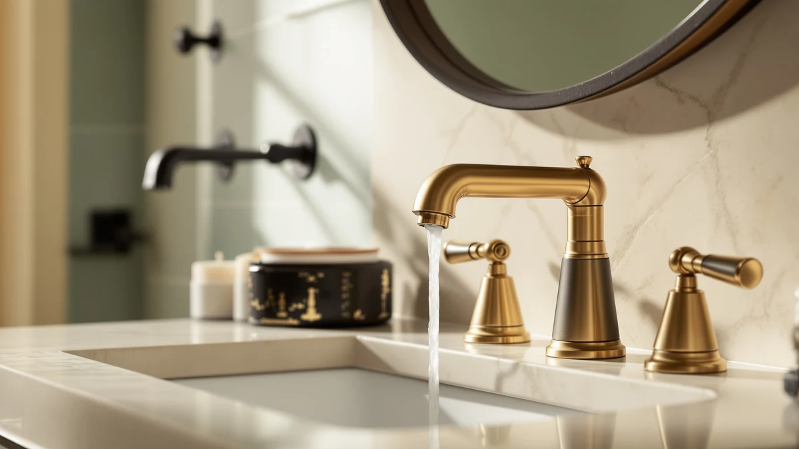

The Best Gold Vanity Faucets (2026)
Prices and picks verified as of August 2026. Independent, reader-supported reviews.


Quick Answer
We compared seven brushed and polished gold vanity faucets on brass construction, finish quality, and price to find the best gold vanity faucets you can install this weekend. The Casavilla Bathroom Faucets Set wins for most bathrooms because it pairs a genuine brass body with a warm gold finish for $45.99, well under what brand-name alternatives charge for the same daily performance.
Our pick: Casavilla Bathroom Faucets Set with at $45.99 Check Price on Amazon
Bottom line: our top pick is the Casavilla Bathroom Faucets Set with Pop Up Drain at $45.99. The best budget option is the Bathroom Sink Faucet 4 Inch 2 Handle Centerset Brushed Nickel at $23.98.
Things to Know Before You Buy
- Brushed gold hides fingerprints better than polished gold. If you or your kids touch the faucet dozens of times a day, the brushed finish on picks like the Casavilla and the Homevacious will show far fewer smudges than a mirror-polished surface.
- Hole configuration decides which faucet fits your sink. Single-hole and centerset faucets like the Fransiton and the two Hurran options drop into standard vanity cutouts, while widespread three-piece sets like the IUERASD and the Homevacious need three separate holes spaced correctly.
- Brass under the finish matters more than the coating on top. Every faucet on this list uses a brass body, which resists corrosion and holds its shape at the threads far longer than a zinc alloy or plastic core with a gold-colored coating.
- Price here spans a wide range, from $23.98 for the Fransiton to $199.90 for the Delta Nicoli. The gap mostly buys you brand support and a heavier handle feel, not a meaningfully better finish.
- A single-handle lever, like the Delta Nicoli uses, is easier to run one-handed than a two-handle widespread set, which matters if you are shopping for a bathroom used by kids or anyone with limited grip strength.
The best gold vanity faucets turn a plain white sink into the focal point of a bathroom, and they do it for a lot less money than most homeowners expect. Gold hardware went from a dated 1980s look to one of the most requested finishes in bathroom remodels, but not every faucet sold as "gold" or "brushed gold" holds up the same way once you turn the handle a few thousand times.
We looked at seven brass gold vanity faucets ranging from $23.98 to $199.90, covering single-hole centerset designs and full widespread three-piece sets. Some are built for a quick weekend swap on a budget, others for a bathroom you want to finish once and forget about. We checked how each one is constructed, what it costs, and which sink setup it actually fits before ranking them.
Our pick for most people is the Casavilla Bathroom Faucets Set at $45.99, a brass faucet with a warm gold finish that installs into a standard vanity without any special plumbing. If you want a brand name behind your purchase, the Delta Nicoli Brushed Gold Faucet costs more at $199.90 but comes with Delta's parts and support network. And if you are working with a tight budget, the Fransiton Bathroom Sink Faucet at $23.98 gets the job done for the least money on this list. Prices reflect current Amazon listings and can shift.
Why You Should Trust Us
Ilane Tall covers home and bath fixtures for Best Bathroom Faucets, with a focus on the finishes and hardware that shoppers see every day but rarely research before buying. For this guide to the best gold vanity faucets, we set aside marketing photography and judged each product on the details that decide whether a gold finish still looks good in two years: the body material under the coating, the hole configuration it fits, and the handle mechanism you touch every morning.
We have no financial relationship with Casavilla, Delta, IUERASD, Hurran, Homevacious, or Fransiton, and the affiliate links on this page do not influence which faucet we rank first or where any pick lands on the list. When a faucet has a real drawback, such as a finish that shows fingerprints or a price that outruns its features, we say so directly instead of burying it.
How We Picked
We started by narrowing the field to faucets with a genuine brass body, since that single spec decides whether a gold vanity faucet still turns smoothly and resists corrosion after months of daily water exposure. Coated plastic or zinc-alloy imitations may look identical in a product photo, but they wear at the threads and dull faster than a real gold vanity faucet built on brass.
From there we grouped the remaining options by hole configuration, because a widespread three-piece set like the IUERASD will not drop into a sink drilled for a single-hole centerset faucet like the Fransiton. We weighed price against what each faucet actually delivers, favoring picks that earn their cost through material and finish rather than a brand name alone, and we made sure the list covered a real range, from a $23.98 entry point to a $199.90 brand-backed option for buyers who want that support.
How We Compared
To compare these gold vanity faucets, we evaluated each one on build material, finish type, handle mechanism, hole configuration, and price, then weighed that price against what a shopper gets for the money. We checked whether the listed material matched a genuine brass body rather than a coated composite, and we compared the finish type, brushed versus polished, since that choice affects how visible fingerprints and water spots become in daily use.
We did not assign numeric scores, because a rating out of ten cannot tell you whether a faucet fits your sink's hole spacing or matches the rest of your hardware. Instead we matched each pick to the buyer it serves best, from someone doing a full widespread install to someone swapping a single centerset faucet on a weekend. The drawbacks we list below are the ones likely to show up after weeks of use, not minor nitpicks pulled from a spec sheet.
Our Picks

Casavilla Bathroom Faucets Set with
What we like
- Genuine brass body under the gold finish
- 7.2-inch profile fits most standard vanity sinks
- Comes as a complete set at $45.99
- Finish resists fingerprints better than polished gold
Flaws but not dealbreakers
- Lacks the brand-name parts network of a Delta or Moen
- Installation still requires basic plumbing tools
| Material | Brass + finish |
| Size | 7.2 inch |
The Casavilla Bathroom Faucets Set tops our list of the best gold vanity faucets because it delivers real brass construction and a warm gold finish for $45.99, a price that undercuts brand-name alternatives without cutting the material that actually matters. Its 7.2-inch profile matches the footprint of most vanity sinks sold in US homes, so you are not stuck measuring a specialty size before you buy. The finish leans brushed rather than mirror-polished, which means it hides the water spots and fingerprints that build up around a sink used by an entire household every day.
You install it the same way you would any standard vanity faucet, connecting the supply lines and securing the base with the included hardware. We like it for anyone updating a bathroom on a normal budget who still wants the brass body and finish quality that separates a real gold vanity faucet from a coated imitation. The set does not come with a big brand's customer service line behind it, but at this price you are not paying for that anyway. For most people replacing a dated chrome or nickel faucet, this is the one to buy first.

Delta Nicoli Brushed Gold Faucet
What we like
- Backed by Delta's brand support and parts availability
- Single lever handle is easy to run with one hand
- Brass construction built for years of daily use
Flaws but not dealbreakers
- Costs more than four times our top pick
- Overkill if you need a basic swap and nothing more
| Material | Brass + finish |
| Size | Lever Handle |
The Delta Nicoli Brushed Gold Faucet is our runner-up among the best gold vanity faucets, and it earns that spot on brand strength as much as build quality. Delta backs this faucet with the kind of parts availability and customer support you do not get from a smaller manufacturer, which matters if a cartridge or handle ever needs replacing five years down the line. The single lever handle gives you one-handed temperature and flow control, a small convenience that adds up if you are washing hands dozens of times a day.
At $199.90, it costs more than four times what our top pick runs, and most of that premium buys the Delta name rather than a dramatically better gold finish. We recommend it for anyone who has been burned by a cheap faucet failing early and wants the reassurance of a brand with a long track record in bathroom hardware. If budget is a real constraint, the Casavilla gets you a similar look for a fraction of the price.

IUERASD Bathroom Faucet 3 Hole
What we like
- Three-hole widespread design gives separate hot and cold handles
- Brass build at a price close to our single-piece picks
- Priced under $47 for a full three-piece set
Flaws but not dealbreakers
- Only fits sinks pre-drilled for widespread faucets
- Three separate pieces make installation slower than a centerset faucet
| Material | Brass + finish |
| Size | — |
The IUERASD Bathroom Faucet is the pick to reach for if your vanity sink is already drilled for a three-hole widespread configuration, since it gives you a genuine brass gold vanity faucet without the widespread markup that some brands charge. Its two-handle layout separates hot and cold water into individual controls, a setup plenty of people still prefer over a single lever, especially in a bathroom where more than one person shares the sink each morning.
Installing a three-piece widespread faucet takes longer than a single-body centerset model because you are aligning and connecting three separate parts under the sink, so budget extra time compared to the Casavilla or the Fransiton. At $46.98, it sits close to our top pick on price while serving a completely different sink layout. If you already own a widespread vanity and want to add gold hardware, this is the straightforward choice.

Bathroom Faucets for Sink 3
What we like
- Full three-piece set costs well under the Delta Nicoli
- Brass construction matches our other picks
- Suits vanities that need a complete widespread replacement
Flaws but not dealbreakers
- Costs more than the IUERASD for a similar three-hole layout
- Only fits sinks with existing widespread drilling
| Material | Brass + finish |
| Size | — |
We call this our budget pick because it delivers a complete brass widespread set for a fraction of what the Delta Nicoli charges, while still giving you three individual pieces instead of a single faucet body. If you decided you need a widespread configuration after reading the IUERASD entry above but want a slightly different look or handle feel, this Hurran set covers the same job at $59.99.
It runs a little higher than the IUERASD despite covering the same three-hole layout, so weigh the two side by side if price is your main concern. We recommend it for anyone replacing an entire outdated widespread faucet who wants brass construction and a gold finish without paying brand-name money for the privilege. Installation follows the same three-piece process as any widespread faucet, so plan on connecting each handle and the spout separately under the sink.

Brushed Gold Bathroom Faucet 3
What we like
- Matches an 8-inch widespread cutout exactly
- Brushed gold finish resists showing water spots
- Priced the same as our top single-body pick
Flaws but not dealbreakers
- Only works if your sink has the 8-inch spacing
- Fewer style variations than the Casavilla
| Material | Brass + finish |
| Size | 8 Inch Widespread |
Homevacious built this faucet specifically for the 8-inch widespread cutout found on many bathroom vanities, and it is one of the more affordable ways to get that fit in a genuine brushed gold finish. The brass body holds up the same way our other top picks do, and at $45.99 it costs the same as the Casavilla despite covering a three-piece widespread installation instead of a single unit.
Because it is built to one specific hole spacing, measure your sink before ordering. If the 8-inch measurement matches, you get a straightforward upgrade with a finish that hides fingerprints better than a polished alternative would. We recommend it for anyone who already has a widespread vanity and wants the best gold vanity faucets look without stepping up to Delta's price point.

4 inch Brushed Gold Bathroom
What we like
- 4-inch centerset body installs faster than a widespread set
- Brass build at one of the lowest prices on this list
- Compact footprint suits smaller vanities
Flaws but not dealbreakers
- Fewer handle and finish options than the pricier picks
- Best suited to secondary bathrooms rather than a main renovation
| Material | Brass + finish |
| Size | — |
Hurran's 4-inch brushed gold faucet is built for the centerset hole spacing common in smaller bathroom vanities, and at $31.99 it lands well below the price of the brand's own widespread set. A single installer can put this one in without the extra alignment work a three-piece widespread faucet requires, since the whole body mounts as one unit.
The trade-off is a simpler feature set than our top picks, which fits a guest bathroom or a rental unit better than it fits a primary suite you plan to show off. Still, the brass body keeps it consistent with every other faucet on this list, so you are not sacrificing durability for the lower price. If your sink takes a compact centerset faucet and you want the best gold vanity faucets look on a tight budget, this is a solid option.

Bathroom Sink Faucet 4 Inch
What we like
- Lowest price of any faucet on this list
- 4-inch centerset body fits standard smaller sinks
- Brass construction instead of a plastic core
Flaws but not dealbreakers
- Basic hardware compared to the Delta or Casavilla
- Best treated as a starter or rental upgrade rather than a forever faucet
| Material | Brass + finish |
| Size | — |
Fransiton's 4-inch faucet is the cheapest way onto this list at $23.98, and it still delivers a brass body rather than the plastic-core imitations that show up at similar prices elsewhere. It fits the same compact centerset sinks as Hurran's 4-inch option above, making it an easy call for a rental, a secondary bathroom, or anyone testing whether a gold finish suits their space before committing to a pricier faucet.
You should not expect the handle feel or finish depth of the Casavilla or the Delta Nicoli at this price, and that is a fair trade for shaving another $8 off an already affordable list. We recommend it when budget is the deciding factor and you need a working, good-looking gold vanity faucet installed without much fuss.
Quick Comparison
| Product | Material | Price | Rating | Best for | Get it |
|---|---|---|---|---|---|
| Casavilla Bathroom Faucets Set with | Brass + finish | $45.99 | 4 | Most bathrooms and budgets | View on Amazon → |
| Delta Nicoli Brushed Gold Faucet | Brass + finish | $199.90 | 4 | Brand support and one-handed control | View on Amazon → |
| IUERASD Bathroom Faucet 3 Hole | Brass + finish | $46.98 | 4 | Pre-drilled widespread sinks | View on Amazon → |
| Bathroom Faucets for Sink 3 | Brass + finish | $59.99 | 4 | Full widespread replacement on a budget | View on Amazon → |
| Brushed Gold Bathroom Faucet 3 | Brass + finish | $45.99 | 4 | 8-inch widespread cutouts | View on Amazon → |
| 4 inch Brushed Gold Bathroom | Brass + finish | $31.99 | 4 | Smaller vanities and secondary baths | View on Amazon → |
| Bathroom Sink Faucet 4 Inch | Brass + finish | $23.98 | 4 | The tightest budgets | View on Amazon → |
Will a gold vanity faucet clash with chrome or nickel fixtures already in my bathroom?
It can, but it does not have to.
Do gold vanity faucets tarnish or lose their finish over time?
A PVD-coated brushed gold finish resists tarnishing far better than older gold-tone faucets from decades past, and most of the picks here use a brass body under that coating rather than plated plastic.
The Competition
Every faucet on this list earns its spot, but not all of them suit the same buyer, so a few land below their price might suggest. The Delta Nicoli is the best-built faucet here, yet its $199.90 price keeps it out of our top pick, since the Casavilla covers the same daily job for less than a quarter of the cost. The Bathroom Faucets for Sink 3 does everything a widespread set should, but it costs more than the nearly identical IUERASD, which holds it to a budget rather than an also-great rank.
We also looked at several gold-tone faucets that use a zinc alloy or plastic core with a thin gold-colored coating instead of brass underneath. We left them off this list because that coating wears through at contact points within months, and a faucet that looks gold for a season is not worth installing over one built to hold its finish for years. After comparing all seven, the Casavilla Bathroom Faucets Set remains our answer for the best gold vanity faucets, since it pairs genuine brass construction with an affordable, fingerprint-resistant finish that most bathrooms and budgets can use.
Frequently Asked Questions
Will a gold vanity faucet clash with chrome or nickel fixtures already in my bathroom?
It can, but it does not have to. A brushed gold faucet paired with chrome towel bars or a nickel shower head tends to read as mismatched, especially in a small bathroom where every fixture sits close together. If you are only swapping the faucet for now, pick a brushed rather than polished gold finish, since the softer tone blends more easily with other metals until you replace the rest.
Do gold vanity faucets tarnish or lose their finish over time?
A PVD-coated brushed gold finish resists tarnishing far better than older gold-tone faucets from decades past, and most of the picks here use a brass body under that coating rather than plated plastic. Daily wiping after use and avoiding abrasive cleaners will keep the finish looking new for years. Cheaper coatings can wear at contact points like the handle, so check reviews for finish complaints before you buy.
Can I install a gold vanity faucet myself, or do I need a plumber?
Most single-hole and widespread gold vanity faucets on this list install with basic tools in under an hour if your existing supply lines and sink holes match the new faucet's configuration. Widespread three-hole sets take a bit longer because you are connecting three separate pieces under the sink. Call a plumber if you need to change your sink's hole spacing or your shutoff valves are old and stiff.